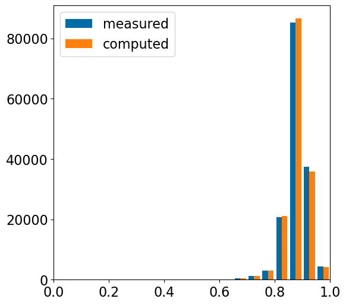
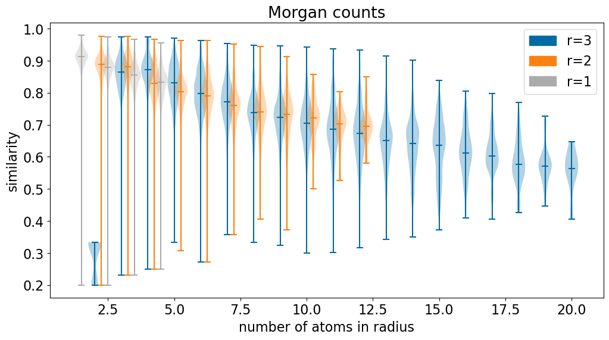
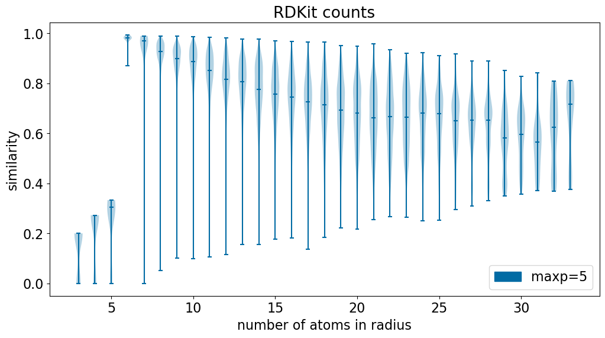

Mainly I just wanted to write “topologically complex”.
Published
May 14, 2024
Impact of single-atom changes on similarity
Last week I got curious about the impact single atoms make on the similarity between two molecules. I was initially wondering whether small differences in the “core” of two molecules have a disproportionate influence on the similarity between them. This blog post came from me trying to answer that question.
Along the way I discovered that there’s more to this topic than I thought, so the blog post is longer than planned. It still feels like there’s some exploration to do, so I may still end up doing a follow up.
Here’s a summary of the analysis of the average Tanimoto similarity of a molecule to itself with a single atom changed to a dummy atom. The analysis was done across 5000 ChEMBL molecules.
FP
mean(SD)
90%
95%
MFP3
0.68(0.12)
0.53
0.48
MFP2
0.75(0.09)
0.63
0.59
MFP1
0.83(0.06)
0.75
0.72
RDK7
0.76(0.15)
0.54
0.47
RDK5
0.74(0.14)
0.53
0.46
TT
0.78(0.12)
0.61
0.55
AP
0.88(0.05)
0.83
0.81
We can think about these values as thresholds for retrieving extremely similar molecules: using the RDK5 fingerprint (RDKit fingerprint with a path length of 5) we need to use a Tanimoto similarity threshold of 0.46 to be 95% certain of retrieving molecules that have the same connectivity and that only differ in the identity of a single atom.
As for my original question about centrality: it’s not how central an atom is that matters, but how many atoms are close to it. We can see this in the similarity map showing the contributions of individual atoms to the similarity of one of the test molecules to itself using the RDK5 fingerprint:
Define a function which changes each of the atoms to a dummy and then compares the similarity of that to the unperturbed molecule.
We track the similarity between the modified and original molecules together with the number of atoms within a target radius of the modified atom (this second piece of info will be used at the end of the blog post).
Interpreting the above: - atom 0 of esomeprazole has 5 atoms (including itself) within radius 2. The count-based fingerprint calculated when setting atom 0 to be a dummy has a similarity of 0.826 to the unmodified fingerprint. - atom 22 (the second to last atom) has 12 atoms (including itself) within radius 2. The count-based fingerprint calculated when setting atom 22 to be a dummy has a similarity of 0.615 to the unmodified fingerprint.
Now let’s do that perturbation on a bunch of molecules and see what the statistics look like. We’ll use 5000 molecules from this older blog post
withopen('../data/BLSets_actives.txt','r') as inf: d = [x.split('\t')[0] for x in inf.readlines()] d.pop(0) # title lineimport randomrandom.seed(0xf00d)random.shuffle(d)d = d[:5000]RDLogger.DisableLog('rdApp.info')mols = []for smi in d: mol = Chem.MolFromSmiles(smi) mols.append(mol)rdMolStandardize.ChargeParentInPlace(mols,numThreads=4)
The first few molecules, just to get a sense of what we’re dealing with here.
accum = defaultdict(lambda : defaultdict(list))for radius in (1,2,3): fpg =lambda r=radius:rdFingerprintGenerator.GetMorganGenerator(radius=r,fpSize=2048) lres = dview.map_sync(lambda x,r=radius,y=get_modified_sims2, z=fpg:y(x,r,z,'GetCountFingerprint'),mols)for entry in lres: accum['counts'][radius].extend(entry) lres = dview.map_sync(lambda x,r=radius,y=get_modified_sims2, z=fpg:y(x,r,z,'GetFingerprint'),mols)for entry in lres: accum['bits'][radius].extend(entry)
Run RDKit fingerprints with max path length 5, 6, and 7
rdkit_accum = defaultdict(lambda : defaultdict(list))for radius in (5,6,7): fpg =lambda r=radius:rdFingerprintGenerator.GetRDKitFPGenerator(maxPath=r,fpSize=2048) lres = dview.map_sync(lambda x,r=radius,y=get_modified_sims2, z=fpg:y(x,r,z,'GetCountFingerprint'),mols)for entry in lres: rdkit_accum['counts'][radius].extend(entry) lres = dview.map_sync(lambda x,r=radius,y=get_modified_sims2, z=fpg:y(x,r,z,'GetFingerprint'),mols)for entry in lres: rdkit_accum['bits'][radius].extend(entry)
Same analysis for topological torsions and atom pairs. For these the extra “radius” argument does not really mean anything
tt_accum = defaultdict(lambda : defaultdict(list))for radius in (3,): fpg =lambda r=radius:rdFingerprintGenerator.GetTopologicalTorsionGenerator(fpSize=4096) lres = dview.map_sync(lambda x,r=radius,y=get_modified_sims2, z=fpg:y(x,r,z,'GetCountFingerprint'),mols)for entry in lres: tt_accum['counts'][radius].extend(entry) lres = dview.map_sync(lambda x,r=radius,y=get_modified_sims2, z=fpg:y(x,r,z,'GetFingerprint'),mols)for entry in lres: tt_accum['bits'][radius].extend(entry)
ap_accum = defaultdict(lambda : defaultdict(list))for radius in (3,): fpg =lambda r=radius:rdFingerprintGenerator.GetAtomPairGenerator(fpSize=4096) lres = dview.map_sync(lambda x,r=radius,y=get_modified_sims2, z=fpg:y(x,r,z,'GetCountFingerprint'),mols)for entry in lres: ap_accum['counts'][radius].extend(entry) lres = dview.map_sync(lambda x,r=radius,y=get_modified_sims2, z=fpg:y(x,r,z,'GetFingerprint'),mols)for entry in lres: ap_accum['bits'][radius].extend(entry)
Save all of those results for later analysis
import copydef to_dict(dd):ifnotisinstance(dd,defaultdict):return copy.deepcopy(dd) res = {}for k,v in dd.items(): res[k] = to_dict(v)return res
import pickleimport gzipwith gzip.open('./results/fp_perturbation.pkl.gz','wb+') as outf: pickle.dump((to_dict(accum),to_dict(rdkit_accum),to_dict(ap_accum),to_dict(tt_accum)),outf)
!chmod gou-w ./results/fp_perturbation.pkl.gz
Load the saved data:
from collections import defaultdictimport pickleimport gzipwith gzip.open('./results/fp_perturbation.pkl.gz','rb') as inf: accum,rdkit_accum,ap_accum,tt_accum = pickle.load(inf)
Now let’s look at the Morgan and RDKit results:
rs = (3,2,1)tacc = accumtitl='Morgan'for which in ('counts','bits'):print(f'---- {which} ----')for rad in rs: yps = [y for x,y in tacc[which][rad]] qs = np.quantile(yps,[0.1,0.05])print(f' r={rad} mean={np.mean(yps):.2f} stddev={np.std(yps):.2f} median={np.median(yps):.2f} 90%={qs[0]:.2f}, 95%:{qs[1]:.2f}')plt.figure(figsize=(12,6))plt.subplot(1,2,1)plt.hist([[y for x,y in tacc['counts'][rad]] for rad in rs], label=[f'counts r={rad}'for rad in rs],bins=20);plt.xlabel('similarity')plt.legend();plt.title(titl)plt.xlim(0,1)plt.subplot(1,2,2)plt.hist([[y for x,y in tacc['bits'][rad]] for rad in rs], label=[f'bits r={rad}'for rad in rs],bins=20);plt.xlabel('similarity')plt.legend();plt.xlim(0,1)plt.tight_layout()
Observations here: - The perturbations have a larger effect when the radius is larger. This makes sense because more atoms “feel” the changed atom with a larger radius. - I’m surprised by how large the overall impact on similarity is for these single atom-changes. With bit-based radius 2 or 3 fingerprints (the most commonly used, I believe), the mean similarities are 0.75 or 0.68 and you have to go all the way down to a similarity level of 0.59 or 0.48 to get 95% of the molecules. Those values are 0.56 and 0.67 with count-based fingerprints.
rs = (7,6,5)tacc = rdkit_accumtitl='RDKit'for which in ('counts','bits'):print(f'---- {which} ----')for rad in rs: yps = [y for x,y in tacc[which][rad]] qs = np.quantile(yps,[0.1,0.05])print(f' maxp={rad} mean={np.mean(yps):.2f} stddev={np.std(yps):.2f} median={np.median(yps):.2f} 90%={qs[0]:.2f}, 95%:{qs[1]:.2f}')plt.figure(figsize=(12,6))plt.subplot(1,2,1)plt.hist([[y for x,y in tacc['counts'][rad]] for rad in rs], label=[f'counts maxp={rad}'for rad in rs],bins=20);plt.xlabel('similarity')plt.legend();plt.title(titl)plt.xlim(0,1)plt.subplot(1,2,2)plt.hist([[y for x,y in tacc['bits'][rad]] for rad in rs], label=[f'bits maxp={rad}'for rad in rs],bins=20);plt.xlabel('similarity')plt.xlim(0,1)plt.legend();plt.tight_layout()
Observations: - In contrast to the Morgan fingerprints, the changes for the bit-based fingerprints are less than count-based. I assume that this has to do with collisions, the RDKit fingerprints set way more bits than the Morgan fingerprints and have many more collisions. - The distributions here have much longer tails than the Morgan FPs did and are more asymmetric (this is inevitable with the longer tails).
Atom pairs and topological torsions;
plt.figure(figsize=(12,6))plt.subplot(1,2,1)for which in ('counts','bits'):print(f'---- {which} ----') yps = [y for x,y in tt_accum[which][3]] qs = np.quantile(yps,[0.1,0.05])print(f' TT mean={np.mean(yps):.2f} stddev={np.std(yps):.2f} median={np.median(yps):.2f} 90%={qs[0]:.2f}, 95%:{qs[1]:.2f}') yps = [y for x,y in ap_accum[which][3]] qs = np.quantile(yps,[0.1,0.05])print(f' AP mean={np.mean(yps):.2f} stddev={np.std(yps):.2f} median={np.median(yps):.2f} 90%={qs[0]:.2f}, 95%:{qs[1]:.2f}')plt.hist([[y for x,y in tt_accum['counts'][3]],[y for x,y in ap_accum['counts'][3]]], label=[f'TT counts','AP counts'],bins=20);plt.xlabel('similarity')plt.xlim(0,1)plt.legend();plt.subplot(1,2,2)plt.hist([[y for x,y in tt_accum['bits'][3]],[y for x,y in ap_accum['bits'][3]]], label=[f'TT bits','AP bits'],bins=20);plt.xlabel('similarity')plt.xlim(0,1)plt.legend();plt.tight_layout()
Observations: - The AP fingerprints are substantially less sensitive to the single-atom perturbations than any of the fingerprints looked at here. - The differences between counts and bits here are so small because both the TT and AP fingerprints use count simulation by default (this is why I used 4096 bits here instead of the 2048 bits used for the other fingerprints)
Aside
Assuming no collisions, we can directly calculate the atom-pair similarity between a molecule and itself with a single atom perturbed.
The Tanimoto similarity between fingerprints A and B is calculated as:
\[\frac{\|A\&B\|}{\|A\|+\|B\|-\|A\&B\|}\]
The number of atom pair bits for a molecule is:
\[\frac{N (N-1)}{2}\]
When we perturb one atom, this changes \(N-1\) of those bits, so the number of bits in common between the perturbed and unperturbed fingerprints is:
\[\frac{N (N-1)}{2} - (N-1)\]
After a bit of math, we find that the Tanimoto similarity between the perturbed and unperturbed molecules is:
nAts = [x.GetNumHeavyAtoms() for x in mols]psims = []for x in nAts:if x<=1:continue psims.extend([(x*(x-1)/2- (x-1))/(x*(x-1)/2+ (x-1))]*x)plt.figure(figsize=(6,6))plt.hist([[y for x,y in ap_accum['counts'][3]],psims],label=['measured','computed'],bins=20);plt.xlim(0,1);plt.legend();

Visualizing the impact of single-atom changes on similarity
Using the RDKit’s similarity maps we can directly visualize how much the single-atom changes affect similarity
from rdkit.Chem.Draw import SimilarityMapsfrom rdkit.Chem import rdDepictorfrom PIL import Imagefrom io import BytesIOdef draw_similarity_map(m,fpfunc,scale_vals=False,fillIt=True,sigma=0.45,w=500,h=300): basefp = fpfunc(m) diffs = []for aidx inrange(m.GetNumAtoms()): nm = Chem.Mol(m) nm.GetAtomWithIdx(aidx).SetAtomicNum(0) nfp = fpfunc(nm) sim = DataStructs.TanimotoSimilarity(basefp,nfp) diffs.append(1.-sim) diffs = np.array(diffs) rng =max(diffs)-min(diffs)# print out the max and min changes caused by a single atomprint(f' max diff={max(diffs):.2f} min diff={min(diffs):.2f}')# optionally scale the values so that differences are more visibleif scale_vals: diffs = (diffs -min(diffs))/rng +0.1 d2d = Draw.MolDraw2DCairo(w,h) d2d.drawOptions().useBWAtomPalette() ps = Draw.ContourParams() ps.fillGrid = fillIt ps.gridResolution =0.1 ps.extraGridPadding =0.5 m = rdMolDraw2D.PrepareMolForDrawing(m, addChiralHs=False)ifnot m.GetNumConformers(): rdDepictor.Compute2DCoords(m) sigmas = [sigma] * m.GetNumAtoms() locs = []for i inrange(m.GetNumAtoms()): p = m.GetConformer().GetAtomPosition(i) locs.append(Geometry.Point2D(p.x, p.y)) Draw.ContourAndDrawGaussians(d2d, locs, list(diffs), sigmas, nContours=8, params=ps) d2d.drawOptions().clearBackground =False d2d.DrawMolecule(m) d2d.FinishDrawing() sio = BytesIO(d2d.GetDrawingText())return Image.open(sio)
This makes it look like centrality is important - the changes are largest around the central S atom. That’s a bit misleading, as another molecule will show.
Let’s look at a molecule from the set that we’ve been working with.
With both fingerprints (but particularly the RDKit fingerprint), we can see that the perturbations are largest in the “topologically complex” parts of the molecule: areas with a lot of branching.
Looking at \(\Delta_{similarity}\) as a function of the number of atoms in the neighborhood
My original idea with this post was to look at how much of an impact “centrality” - how close an atom is to the middle of the molecule - has on similarity. I realized pretty quickly that the important factor for more “local” fingerprints is the number of atoms within the fingerprints “radius”, not necessarily where that atom is in the molecule.
So let’s look at that.
import matplotlib.patches as mpatchesplt.figure(figsize=(12,6))labels = []for i,rad inenumerate((3,2,1)): d = defaultdict(list)for r,s in accum['counts'][rad]: d[r-1].append(s) labels.append((mpatches.Patch(color=f'C{i}'), f'r={rad}'))# only keep cases where we have at least 10 examplesfor k inlist(d.keys()):iflen(d[k])<10:del d[k] ks =sorted(d.keys()) ps = [x+i*.25for x in ks] plt.violinplot([d[k] for k in ks],ps,showmedians=True) plt.xlabel('number of atoms in radius')plt.ylabel('similarity')plt.legend(*zip(*labels))plt.title('Morgan counts');

import matplotlib.patches as mpatchesplt.figure(figsize=(12,6))labels = []for i,rad inenumerate((5,)): d = defaultdict(list)for r,s in rdkit_accum['counts'][rad]: d[r].append(s) labels.append((mpatches.Patch(color=f'C{i}'), f'maxp={rad}'))# only keep cases where we have at least 10 examplesfor k inlist(d.keys()):iflen(d[k])<10:del d[k] ks =sorted(d.keys()) ps = [x+i*.25for x in ks] plt.violinplot([d[k] for k in ks],ps,showmedians=True)plt.xlabel('number of atoms in radius')plt.ylabel('similarity')plt.legend(*zip(*labels),loc=4)plt.title('RDKit counts');

The similarity initially decreases before flattening out at around 20 atoms in the radius.